TaskManager

🔍
🔘
Selecione um filtro para a pesquisa
Título
Descrição
Prazo
Prioridade
Status
Selecionar filtro
JSON
teste
CSV
teste
Fechar

9
0
1
2
3
4
5
6
7
8
9
0
9
0
1
2
3
4
5
6
7
8
9
0
:
5
0
1
2
3
4
5
0
9
0
1
2
3
4
5
6
7
8
9
0
Iniciar timer
Foco
Descanso
Fechar
Tarefas
Exportar
Título da tarefa
Descrição da tarefa
Prazo da tarefa
Prioridade da tarefa
Baixa
Normal
Alta
Urgente
Progressso da tarefa
Pendente
Em andamento
Concluída
Adicionar tarefa
Cancelar
Your browser does not support the audio element.